MonoSLAM · PTAM · ORB-SLAM · VINS-Mono · maplab은 각자 무엇을 처음 해냈나?
NeRF · 3D Gaussian Splatting · 「한 번에 보는 신경망」은 SLAM의 어느 자리를 바꾸고 있나?
SLAM이 돌아가려면 어떤 알고리즘이 몇 개 필요하고, 이 강의는 그것을 어떤 순서로 배우나?
1부 다섯 회차 동안 좌표계를 정하고, 회전을 다루고, 카메라로 점을 찍고, 영상 두 장으로 점의 3차원 위치를 되살렸다.
손에 남은 것은 부품들이다. 그런데 영상이 수천 장, 점이 수만 개가 되면 이 부품들을 어떻게 엮어야 할까?
무엇을 계속 들고 다니고 무엇을 버려야 할까? 그 질문에 40년 동안 연구자들이 내놓은 답이 오늘의 이야기다.
오늘은 식을 거의 쓰지 않는다. 대신 장마다 그림이 하나씩 있고, 그림이 이야기를 끌고 간다.
여기서 그림으로 본 것들 — 얽힌 오차, 꽉 찬 공분산, 텅 빈 정보행렬, 키프레임, 슬라이딩 윈도우 — 은
7회와 8회에서 식으로 처음부터 다시 세운다. 오늘은 「왜 그런 식이 필요해졌는지」만 가져가면 충분하다.
한 장 요약 — 열 번의 「막힘」과 「풀림」
연표를 외울 필요는 없다. 이 분야는 대체로 앞 방법이 어딘가에서 막혔고, 그 막힌 자리를 푼 것이 다음 방법이 되는 식으로 움직였다.
아래 표의 왼쪽 칸이 늘 먼저다.
장
시기
무엇이 막혔나
무엇이 그것을 풀었나
1
1986~2002
로봇 위치의 오차와 지도의 오차가 서로 얽혀 있다
위치와 지도를 한 확률분포로 함께 들고 다닌다 (EKF-SLAM)
2
2003~2008
바퀴도 레이저도 없이 카메라 하나로 할 수 있나
일정속도 운동 모델 · 탐색 타원 · 역깊이 (MonoSLAM)
3
2007
필터는 점을 100개쯤밖에 못 든다
추적과 지도를 두 스레드로 나누고 지도는 키프레임 BA로 (PTAM)
4
2010~2012
필터와 최적화 중 무엇이 맞나
같은 계산 예산이면 BA가 이긴다 · 궤적 전체의 정보행렬은 비어 있다
5
2015~2021
책상 밖으로 나가면 길을 잃고, 돌아와도 못 알아본다
특징 하나로 추적 · 지도 · 재국소화 · 루프를 다 한다 (ORB-SLAM)
6
2007~2018
영상만으로는 스케일을 모르고, 빨리 흔들면 무너진다
IMU를 최적화에 넣는다 — 사전적분 · 슬라이딩 윈도우 (VINS-Mono)
7
2018~2023
한 번 돌고 나면 지도를 버린다
지도를 쌓고 합치고 다시 쓴다 (maplab)
8
2016~2021
조명 · 시점이 바뀌면 「같은 점인가」를 못 알아본다
그 판단을 신경망이 맡는다
9
2020~2024
점 지도로는 장면을 다시 그릴 수 없다
지도를 다시 그릴 수 있는 것으로 — NeRF · 3DGS
10
2024~
대응 찾기 · 기하 · 삼각측량을 단계마다 따로 한다
신경망 하나가 점 지도와 자세를 한 번에 낸다
해석: 열 번 모두 「유행이 바뀌어서」가 아니라 앞 방법이 막힌 자리에서 시작했다.
그리고 이 열 번 동안 한 번도 바뀌지 않은 것이 하나 있다. 에필로그에서 한 줄로 꺼낸다.
프롤로그 — 닭과 달걀
처음 와 보는 건물에 눈을 가린 채 들어갔다고 해 보자. 가끔 눈가리개를 들춰 주변을 볼 수 있다.
지도가 있으면 「저 문이 지도의 이 문이니까 나는 여기 있다」고 할 수 있다. 내 위치를 정확히 알면 「여기서 3 m 앞에 문이 있다」고 지도에 적을 수 있다.
그런데 둘 다 없으면 어떻게 할까? 지도를 그리려면 위치가 필요하고, 위치를 알려면 지도가 필요하다. 닭과 달걀이다.
🆕 SLAM — Simultaneous Localization and Mapping
위치 추정(localization)과 지도 작성(mapping)을 동시에 한다는 뜻의 이름
1995년 로봇 학회(ISRR)에서 영국 · 호주의 Hugh Durrant-Whyte 연구진이 쓰면서 굳은 이름이다. 그 전에는 같은 문제를 「concurrent mapping and localization」 등으로 불렀다.
답은 「둘 다 조금씩 틀린 채로 함께 고쳐 간다」였다. 아래 그림은 원을 한 바퀴 도는 로봇이 주변의 표시 여덟 개를 보면서
자기 위치와 지도를 함께 추정하는 모습이다. 오늘의 1장과 4장도 이 예시 하나를 계속 쓴다.
로봇은 매 걸음 바퀴로 잰 이동(오차 10 cm)을 믿고 움직이고, 표시가 가까이 오면 그 상대 위치를 잰다(오차 5 cm).
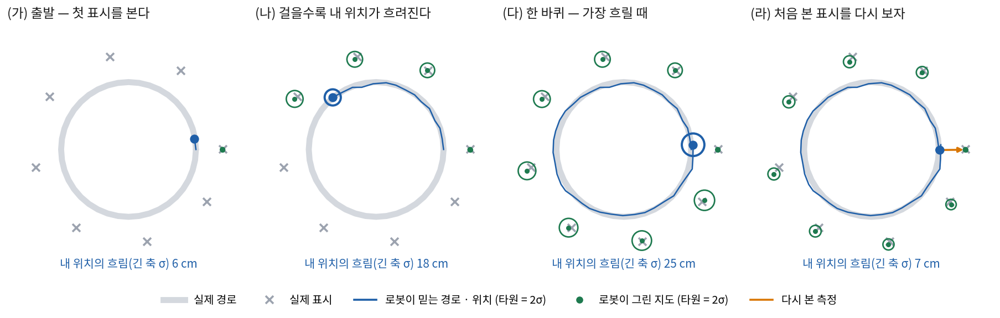
타원은 2σ 범위로, 이 예시를 칼만 필터로 실제로 계산한 불확실도다(7회에서 같은 모형을 식으로 세운다).
로봇 위치의 흐림(타원의 긴 축 σ)은 6 cm → 18 cm → 25 cm로 커지다가, 처음 본 표시를 다시 보는 순간 7 cm로 줄어든다.
로봇만 줄어든 것이 아니다 — 지나오며 그린 표시 여덟 개의 타원도 함께 줄었다.
그림에서 두 가지를 읽을 수 있다. 첫째, 걷는 동안 내 위치는 점점 흐려지고, 그 흐린 위치에서 그린 지도도 똑같이 흐리다.
둘째, 예전에 본 것을 다시 알아보는 순간 모든 것이 한꺼번에 선명해진다. 이것을 루프 클로징(loop closing)이라고 한다.
그런데 (라)에서 0번 표시만 다시 봤는데 왜 다른 표시들까지 줄어들었을까? 그 질문이 SLAM의 출발점이다.
1장 · 1986~2002 — 오차가 얽혀 있다 · EKF-SLAM
로봇이 표시를 보고 지도에 적을 때, 표시의 위치는 「내가 믿는 내 위치 + 잰 상대 위치」로 적힌다.
그러니 내 위치가 오른쪽으로 10 cm 틀려 있었다면 그 순간 적은 표시도 오른쪽으로 10 cm 틀려 있다.
그 뒤에 적은 표시들도 같은 로봇 오차를 물려받는다. 서로 한 번도 같이 보인 적 없는 표시 둘이라도
같은 로봇이 적었기 때문에 오차가 같은 방향으로 함께 기울어 있다.
🆕 이 장의 이름들
Smith · Self · Cheeseman — 사람 이름 (1986 · 1990)
미국 SRI International의 Randall Smith, Matthew Self, Peter Cheeseman. 논문 Estimating Uncertain Spatial Relationships in Robotics에서
「로봇과 표시들의 오차를 따로 다루면 안 되고, 상관까지 포함해 하나의 분포로 들고 다녀야 한다」고 밝혔다. SLAM의 출발점으로 꼽힌다.
상관(correlation)
두 오차가 함께 움직이는 정도. 1이면 늘 같이 움직이고, 0이면 서로 무관하다. 1부에서 쓴 공분산 행렬의 비대각 칸이 이것을 담는다.
EKF-SLAM
로봇 상태와 모든 표시를 한 벡터로 이어 붙이고, 그 전체를 하나의 가우시안(평균 벡터 + 공분산 행렬)으로 들고 다니며
확장 칼만 필터(EKF)로 고쳐 가는 방식. EKF의 식은 7회에서 처음부터 세운다.
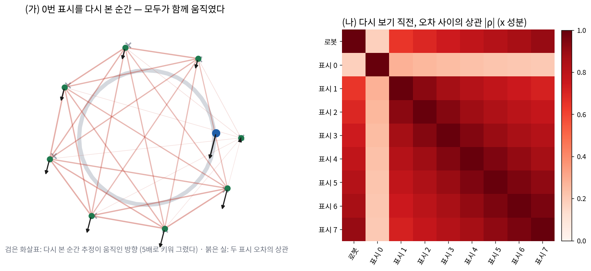
(가) 0번 표시를 다시 본 순간 추정이 움직인 방향(5배로 키워 그렸다) — 다시 보지 않은 표시들도 같은 방향으로 끌려갔다.
(나) 그 직전의 상관 |ρ|. 한 번도 같이 보인 적 없는 표시끼리도 대부분 0.6을 넘는다(쌍들의 중앙값 0.82).
0번 표시만 옅은 것은 출발 직후 로봇이 아직 정확할 때 적었기 때문이다.
표시들은 보이지 않는 실로 이어져 있는 셈이다. 하나를 당기면 실을 타고 다른 것들도 따라 움직인다.
프롤로그에서 표시 하나를 다시 봤을 뿐인데 지도 전체가 선명해진 것이 이 실 때문이다.
그래서 이 실을 끊으면 — 즉 상관을 무시하고 표시마다 따로 추정하면 — 계산은 가벼워지지만 루프를 닫아도 지도가 고쳐지지 않는다.
이 통찰을 그대로 구현한 것이 EKF-SLAM이다. 로봇과 표시 전부를 한 벡터에 넣고, 그 공분산 행렬을 통째로 들고 다닌다.
2001년에는 Dissanayake 외(시드니 대학교)가 이 방식에서 지도의 불확실도가 꾸준히 줄어들어 일정한 하한에 수렴한다는 것을 증명해,
「SLAM은 원리적으로 풀린다」는 보증을 주었다.
그런데 실의 개수가 문제였다. 표시가 \(N\)개면 실은 대략 \(N^2\)개다. 2장의 MonoSLAM처럼 카메라 상태 13개에 점마다 3개씩 붙이면
점 100개에서 상태가 313차원, 공분산이 97,969칸이고, 점 6,000개면 324,468,169칸이다.
표시를 하나 다시 볼 때마다 이 칸을 전부 고쳐야 한다. EKF-SLAM은 SLAM이 왜 되는지를 가장 잘 보여 주는 형태이면서,
동시에 커질 수 없는 형태였다.
같은 시기의 다른 길 — FastSLAM (2002)
Montemerlo · Thrun 외(카네기멜런 · 스탠퍼드)의 FastSLAM은 실을 다른 방법으로 다뤘다.
「로봇이 지나온 경로를 하나로 정해 놓으면 표시들 사이의 실이 사라진다」는 관찰을 썼다 — 실이 생긴 이유가 공통의 로봇 오차였기 때문이다.
그래서 경로 가설을 여러 개(파티클) 들고, 가설마다 표시를 작은 필터로 따로 추정한다.
2차원 레이저 SLAM에서 오래 쓰였고, 7회의 파티클 필터 절에서 식으로 다시 본다.
2장 · 2003~2008 — 카메라 하나로 · MonoSLAM
1장의 로봇들은 대체로 바퀴의 회전수를 재고 레이저로 거리를 쟀다. 그럼 손에 든 카메라 하나로도 될까?
바퀴가 없으니 「얼마나 움직였다」는 입력이 없고, 카메라는 거리를 재지 못한다(5회의 스케일 모호성). 그래서 오랫동안 어렵다고 여겨졌다.
🆕 MonoSLAM — 시스템 이름 (Davison, ICCV 2003 · Davison · Reid · Molton · Stasse, IEEE TPAMI 2007)
Andrew Davison — 사람 이름 (당시 옥스퍼드 대학교, 지금 Imperial College London)
이 이야기에 여러 번 다시 나온다 — 「Why filter?」(4장), MonoGS(9장), MASt3R-SLAM(10장)이 모두 그의 연구실에서 나왔다.
MonoSLAM은 2003년에 단안 카메라 하나로 30 Hz 실시간 SLAM을 처음 보였다. 1장의 EKF-SLAM 틀을 그대로 쓰되,
카메라라서 생기는 세 문제를 각각 풀었다.
문제
MonoSLAM의 답
바퀴가 없어 「얼마나 움직였나」를 모른다
일정속도 운동 모델 — 카메라가 직전의 속도 · 각속도로 계속 움직인다고 예측하고, 그 가정이 틀리는 만큼을 잡음으로 둔다.
그래서 상태가 위치 3 · 쿼터니언 4 · 속도 3 · 각속도 3 = 13에 점마다 3씩이다
프레임마다 영상 전체에서 점을 찾으면 느리고 틀린 짝이 많다
active search — 필터가 「이 점은 다음 영상의 여기쯤, 이 타원 안에 보일 것」을 미리 계산하고, 그 안에서만 찾는다
새로 본 점은 깊이를 모른다
처음엔 광선 위에 깊이 가설 여러 개를 두고 좁혀 갔고, 뒤에 역깊이(inverse depth) 표현(Civera · Davison · Montiel, IEEE T-RO 2008)으로
깊이를 모르는 점도 바로 필터에 넣을 수 있게 됐다
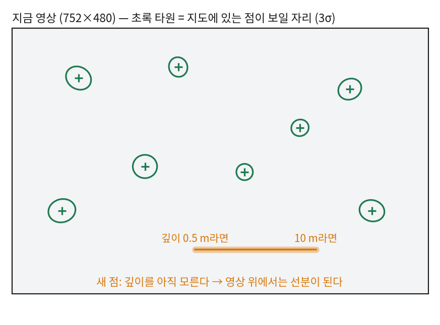
EuRoC 카메라(4회의 내부 파라미터)로 계산했다. 예측한 자세에 위치 2 cm · 회전 0.5°, 지도점에 1 cm의 불확실도를 두었을 때
지도점이 보일 자리는 반지름 15~25 px의 타원이다 — 영상 36만 픽셀 중 이 몇 군데만 찾으면 된다.
반면 몇 프레임 전에 처음 본 새 점은 깊이를 모르므로(0.5~10 m) 지금 영상에서는 길이 218 px의 선분 어딘가에 있다.
5회의 에피폴라선과 같은 이야기다.
해석: active search는 「필터가 들고 다니는 불확실도」를 찾는 일에 되먹인 것이다.
공분산이 계산 부담이기만 한 것이 아니라 탐색 범위를 알려 주는 쓸모가 있다는 것을 보였다.
9회 프론트엔드에서 IMU 예측으로 탐색 범위를 줄이는 것도 같은 생각이다.
MonoSLAM의 시작에는 크기를 아는 표적(특징점 네 개가 찍힌 종이)이 필요했다. 단안은 스케일을 모르니, 처음 한 번은 사람이 자를 대 준 것이다.
그리고 한계는 1장 그대로였다. 실시간을 지키려면 지도점을 100개 안팎으로 묶어 둬야 했고, 방 하나를 넘기 어려웠다.
필터 계열 단안 SLAM의 정점이자, 사실상 마지막 대표작이 됐다.
3장 · 2007 — 추적과 지도를 나누다 · PTAM
점 100개는 너무 적다. 그런데 매 프레임 지도 전체를 고치지 않으면 어떨까?
카메라 자세는 매 프레임 알아야 하지만, 지도는 가끔 고쳐도 되지 않을까?
🆕 PTAM — 시스템 이름 (Klein & Murray, ISMAR 2007)
Parallel Tracking and Mapping. Georg Klein · David Murray, 옥스퍼드 대학교
ISMAR은 증강현실(AR) 학회다. 책상 위에 가상 물체를 띄우는 시연으로 유명해졌다.
키프레임(keyframe)
모든 프레임 중에서 지도에 남겨 둘 만한 것만 고른 프레임. 앞 키프레임과 충분히 떨어져(기선 확보) 새로 볼 것이 있을 때 고른다.
번들조정(bundle adjustment, BA)
여러 카메라 자세와 3차원 점을 한꺼번에 움직여 재투영 오차(4회)의 제곱합을 최소화하는 것. 사진측량에서 100년 가까이 쓰던 방법이다. 8회에서 식으로 세운다.
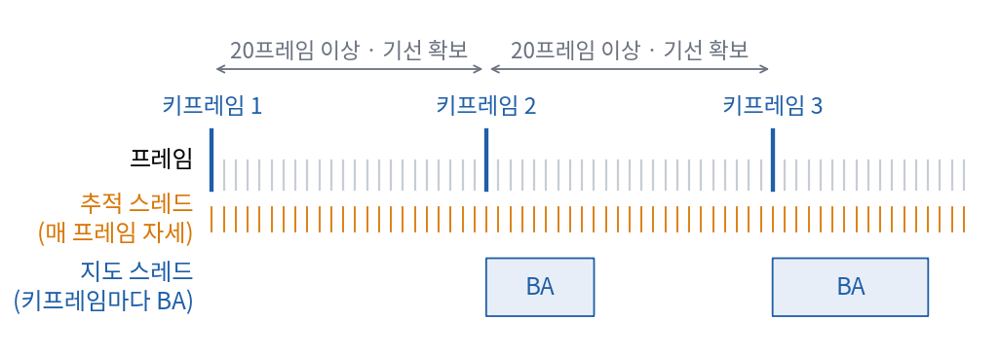
추적 스레드는 매 프레임 「지금 지도에 대한 내 자세」만 빠르게 계산한다. 지도 스레드는 키프레임이 들어올 때만 BA로 지도를 고친다 — 느려도 된다.
이 분리 하나로 지도점이 수천 개가 됐다. 필터처럼 매 프레임 모든 상관을 고치지 않고, 지도는 지도대로 시간을 들여 정밀하게 다듬는다.
지금 쓰이는 거의 모든 시각 SLAM — ORB-SLAM, VINS-Mono — 이 이 「추적 / 지도」 분리 위에 서 있다.
다만 PTAM의 초기화는 사용자가 카메라를 옆으로 10 cm쯤 옮겨 주는 것이었고, 그 거리를 10 cm로 가정해 스케일을 정했다.
MonoSLAM의 표적처럼, 스케일은 여전히 밖에서 메워 넣은 것이었다.
4장 · 2010~2012 — Why filter? · 희소성의 발견
PTAM이 잘 돌자 질문이 생겼다. 필터(MonoSLAM)와 키프레임 BA(PTAM) 중 원리적으로 어느 쪽이 나은가?
필터가 틀린 방법이라서 진 것일까, 아니면 다른 이유가 있을까?
🆕 「Why filter?」 — 논문 (Strasdat · Montiel · Davison, ICRA 2010 · Image and Vision Computing 2012)
Hauke Strasdat(Imperial College London) · J. M. M. Montiel(사라고사 대학교) · Andrew Davison
원제는 Real-time Monocular SLAM: Why Filter? MonoSLAM을 만든 연구실에서 「왜 아직 필터를 쓰나」를 물은 논문이다.
논문의 결론은 계산 예산의 배분 문제였다. 정확도는 대체로 「점을 몇 개 썼나」를 따라 오른다.
필터는 점이 늘면 비용이 제곱으로 늘어 점을 많이 못 든다. 키프레임 BA는 프레임을 몇 장만 골라 쓰는 대신 점은 얼마든지 들 수 있다.
같은 계산 시간을 주면 BA 쪽이 더 많은 점을 쓰고, 그래서 더 정확했다.
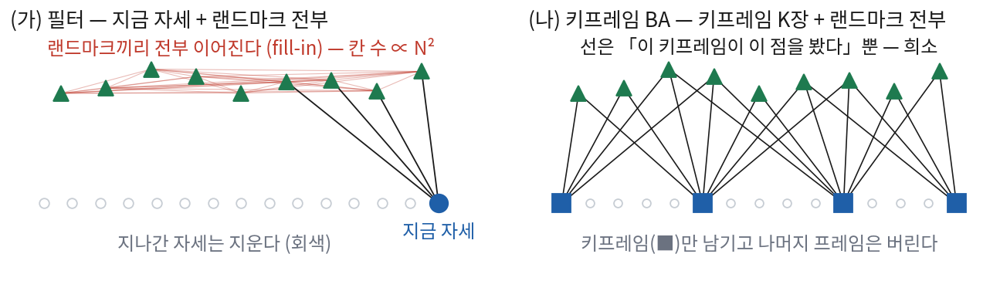
(가) 필터는 지나간 자세를 지우는 대가로 표시끼리 전부 이어진다 — 1장의 실이다. (나) 키프레임 BA는 키프레임 몇 장을 남겨 두고, 선은 「이 키프레임이 이 점을 봤다」뿐이다.
그림의 (나)가 바로 이 시대의 두 번째 발견으로 이어진다. 지나간 자세를 지우지 않고 남겨 두면 오히려 구조가 단순해진다.
프롤로그의 예시를 이번에는 필터로 풀지 않고, 로봇이 지나온 41개 자세와 표시 8개를 전부 변수로 두고 한꺼번에 풀어 보자.
🆕 정보행렬(information matrix)
공분산 행렬의 역행렬
공분산이 「얼마나 모르나」라면 정보행렬은 「얼마나 아나」다. 정보행렬의 한 칸이 0이면 나머지 변수를 다 알 때 그 두 변수는 서로 상관이 없다는 뜻이다.
측정 하나는 그 측정이 엮는 변수들의 칸에만 값을 더한다. 7회와 8회에서 이 문장을 식으로 증명한다.
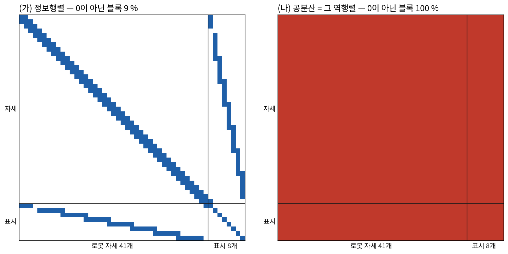
같은 예시, 같은 측정. (가) 정보행렬에서 칠해진 칸은 「바로 이어진 두 걸음」과 「이 자세에서 이 표시를 봤다」뿐이다 — 전체의 9 %.
(나) 그 역행렬인 공분산은 100 % 꽉 차 있다. 1장의 실은 공분산에서 보이는 모습이고, 정보행렬에서는 사라진다.
해석: 공분산은 꽉 차 있는데 그 역행렬은 거의 비어 있다. 비어 있는 행렬은 빨리 풀 수 있다.
필터가 무거웠던 이유는 「지나간 자세를 지워서」 남은 변수들이 서로 다 엮였기 때문이었다(4장 그림 (가)).
이 발견이 필터에서 그래프 최적화로 넘어가는 문을 열었고, 8회가 이 그림의 식 버전이다.
생각 자체는 오래됐다. Lu & Milios는 1997년에 이미 자세들을 마디로, 측정을 선으로 잇는 자세그래프(pose graph)를 제안했지만,
당시에는 계산이 따라가지 못해 묻혔다. 2000년대 중반부터 희소 행렬을 빠르게 푸는 방법(√SAM 2006, iSAM 2008 · iSAM2 2012)과
누구나 쓸 수 있는 라이브러리(g2o 2011, Google의 Ceres Solver 2012 공개)가 나오면서 그래프 최적화가 표준이 됐다.
5장 · 2015~2021 — 하나의 특징으로 전부 · ORB-SLAM
「필터냐 최적화냐」가 정리되자 질문이 바뀌었다. PTAM은 책상 위에서는 훌륭했지만, 방을 나가 복도를 몇 분 걸으면 무너졌다.
추적을 놓치면 다시 찾지 못했고, 한 바퀴 돌아 제자리에 와도 여기가 아까 거기라는 것을 몰랐다. 실험실 밖에서 몇 분이고 버티는 시스템은 어떻게 짤까?
🆕 이 장의 이름들
ORB-SLAM — 시스템 이름 (Mur-Artal · Montiel · Tardós, IEEE T-RO 2015)
스페인 사라고사 대학교. ORB-SLAM2(2017, 스테레오 · RGB-D 추가), ORB-SLAM3(Campos 외, 2021, 시각-관성 · 다중 지도 추가)로 이어진다.
ORB — 특징점 이름
FAST라는 빠른 모서리 검출기로 점을 찾고, 그 주변 밝기 비교를 0/1로 늘어놓은 기술자(BRIEF)를 회전에 강하게 고쳐 붙인 것. 9회에서 직접 다룬다.
재국소화(relocalization) · 루프 클로징(loop closing)
재국소화는 추적을 놓친 뒤 지금 영상을 지도와 맞춰 자세를 다시 찾는 일, 루프 클로징은 예전에 온 곳을 알아보고 그사이 쌓인 오차를 고치는 일이다. 둘 다 13회다.
DBoW2 — 라이브러리 이름 (Gálvez-López & Tardós, 2012)
영상을 「어떤 시각 단어(비슷한 기술자를 묶은 대표값)가 몇 번 나오나」의 히스토그램으로 요약해, 비슷한 영상을 빨리 찾게 해 준다(bag of words).
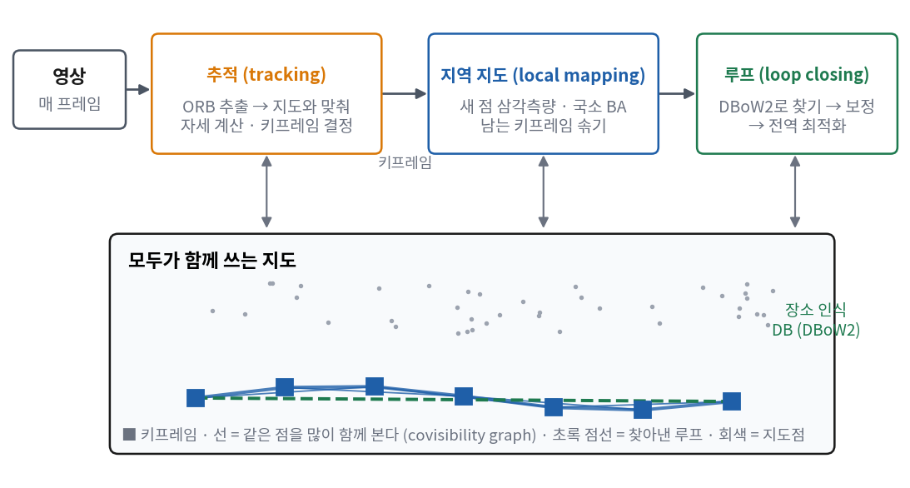
ORB-SLAM의 세 스레드. PTAM의 「추적 / 지도」에 루프 스레드가 더해졌다. 키프레임끼리는 「같은 점을 많이 함께 본다」로 이어지고(covisibility graph), 루프를 찾으면 초록 점선이 생긴다.
ORB-SLAM이 처음 해낸 것을 다섯 줄로 줄이면 다음과 같다.
무엇을
어떻게
특징 하나로 모든 일
추적 · 지도 · 재국소화 · 루프가 같은 ORB 기술자를 쓴다. 따로 뽑지 않으니 빠르고, 지도가 재인식에 바로 쓰인다
국소 BA의 범위
covisibility graph — 지금 키프레임과 같은 점을 많이 본 이웃 키프레임들만 국소 BA에 넣는다. 지도가 커져도 한 번의 BA 크기는 일정하다
루프를 닫을 때의 그래프
essential graph — covisibility graph에서 강한 선만 남긴 가벼운 그래프. 루프 보정을 이 위의 자세그래프로 먼저 퍼뜨린다
키프레임 정책
「넣기는 너그럽게, 솎기는 엄격하게」 — 일단 많이 넣고, 다른 키프레임들이 이미 본 것만 보는 키프레임은 지운다
자동 초기화
첫 두 영상의 대응에 호모그래피(평면 장면)와 기본행렬(5회) 두 모형을 다 맞춰 보고 더 잘 맞는 쪽으로 시작한다
새로운 이론 하나보다 잘 맞물린 엔지니어링으로 평가받는 시스템이다. 뒤의 ORB-SLAM3는 여기에 IMU(6장)와 Atlas를 더했다.
Atlas는 추적을 놓치면 지도를 얼려 두고 새 지도를 따로 시작했다가, 나중에 두 지도가 같은 곳을 보면 하나로 합치는 다중 지도 구조다
(Elvira · Tardós · Montiel, IROS 2019). 7장의 maplab과 같은 방향의 생각이다.
곁가지 — 직접법 · 모서리가 아니라 밝기를 맞춘다
특징점 방식은 영상에서 모서리를 골라내고 나머지 픽셀은 버린다. 그런데 무늬 없는 벽이나 흐린 영상에서는 고를 모서리 자체가 모자란다.
그럼 픽셀의 밝기를 직접 맞추면 어떨까? 「자세와 깊이가 맞으면, 영상 1의 이 픽셀은 영상 2의 저 픽셀과 밝기가 같아야 한다」는 조건만 쓰는 것이다.
🆕 LSD-SLAM · DSO — 시스템 이름 (Engel 외, 뮌헨 공대)
Jakob Engel과 Daniel Cremers 연구실
LSD-SLAM(Large-Scale Direct, ECCV 2014), DSO(Direct Sparse Odometry, 2016년 공개 · IEEE TPAMI 2018). 직접법의 한 줄기가 한 연구실에서 자랐다.
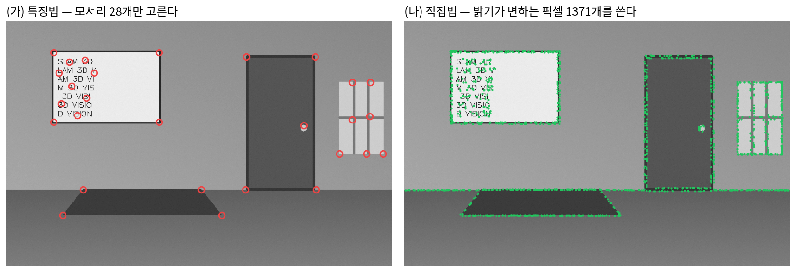
설명을 위해 만든 방 영상이다. (가) 특징법은 모서리만 고른다(VINS-Mono 기본값과 같은 「최대 150개 · 30 px 간격」으로 뽑아 28개가 나왔다).
(나) 직접법(DSO의 고르는 방식을 흉내 냈다)은 모서리가 아닌 테두리 · 경계선의 픽셀까지 1,371개를 쓴다. 매끈한 벽은 두 방법 모두 못 쓴다.
대가도 분명하다. 「같은 점은 같은 밝기로 찍힌다」는 가정에 기대므로 노출이 바뀌거나 렌즈 가장자리가 어두워지면 흔들린다.
그래서 DSO는 노출 시간 · 렌즈 비네팅 · 카메라 응답 곡선까지 보정한다. EuRoC는 카메라가 자동 노출이라 프레임마다 밝기가 튈 수 있는데,
9회 프론트엔드에서 이 현상을 직접 보게 된다. 같은 시기 GPU와 깊이 카메라(Kinect)로 장면 전체를 표면으로 녹여 넣는
밀집 재구성(KinectFusion · DTAM, 2011)도 나왔다 — 9장의 「지도가 그림이 된다」가 이 줄기 끝에 있다.
6장 · 2007~2018 — IMU가 들어온다 · VINS-Mono
MonoSLAM은 표적으로, PTAM은 「10 cm 움직였다」는 가정으로 스케일을 메웠다. 둘 다 실제로 재지는 못했다.
왜 영상만으로는 스케일을 잴 수 없을까? 5회에서 식으로 본 것을 그림 한 장으로 다시 보자.
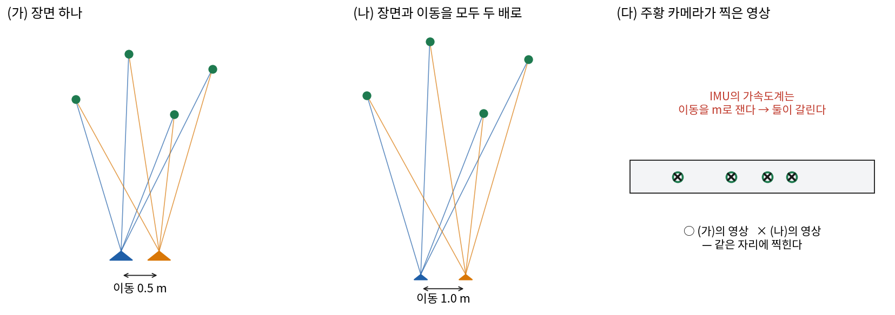
장면과 카메라 이동을 함께 두 배로 키워도 영상은 픽셀 하나 다르지 않다. 영상만 보는 시스템은 (가)와 (나)를 원리적으로 가를 수 없다.
가속도계는 이동을 m/s²라는 절대 단위로 재므로 둘을 가른다.
IMU가 더해 준 것은 스케일만이 아니다. 가만히 있는 가속도계는 중력을 재므로 어느 쪽이 아래인지(롤 · 피치)를 늘 안다.
빠르게 흔들려 영상이 번지거나 흰 벽만 보일 때도 몇백 ms는 IMU로 버틴다. 반대로 IMU만 적분하면 1회에서 본 것처럼 10초에 12 m가 벗어난다.
카메라가 약한 순간에 IMU가 강하고, IMU가 약한 긴 시간에 카메라가 강하다. 그리고 스마트폰 덕에 작은 IMU(MEMS)는 사실상 공짜가 됐다.
남은 문제는 「어떻게 넣나」였다. 필터 쪽에서는 2007년 MSCKF(Mourikis & Roumeliotis, 미네소타 대학교)가
랜드마크를 아예 상태에 넣지 않고 최근 카메라 자세 몇 개만 들고 다니는 방식으로 1장의 \(N^2\)을 피했다.
최적화 쪽은 더 까다로웠다. IMU 측정을 적분하려면 시작 자세와 속도가 필요한데, 최적화는 반복할 때마다 그 값을 바꾸니 반복마다 다시 적분해야 했다.
이 문제를 푼 것이 사전적분(preintegration)이다 — 두 키프레임 사이의 IMU 측정을 시작 상태와 무관한 상대량 하나로 미리 묶어 둔다
(Lupton & Sukkarieh, IEEE T-RO 2012 · Forster 외, RSS 2015 · IEEE T-RO 2017). 무엇을 어떻게 묶는지는 10회의 내용 전부다.
그 사이 2015년에는 취리히 연방공대의 OKVIS(Leutenegger 외, IJRR)가 키프레임 기반 최적화로 영상과 IMU를 함께 푸는 길을 보였다.
🆕 이 장의 이름들
VINS-Mono — 시스템 이름 (Qin · Li · Shen, IEEE T-RO 2018)
홍콩과기대(HKUST) Shaojie Shen 연구실. Visual-Inertial Navigation System, 단안판. 이 강의 3부(9~14회)의 주인공이다. 뒤에 스테레오 · GPS까지 받는 VINS-Fusion으로 이어졌다.
KLT — 추적 방법 이름 (Lucas · Kanade · Tomasi)
앞 영상의 점 둘레 밝기 무늬가 다음 영상의 어디로 옮겨 갔는지 찾아 점을 따라가는 광류 추적. 기술자를 뽑지 않는다. 9회의 기본 추적기다.
슬라이딩 윈도우(sliding window) · marginalization
최근 키프레임 몇 장만 변수로 두고 최적화하는 방식과, 창에서 밀려나는 변수를 지우되 그 정보는 남은 변수에 옮겨 두는 연산. 8회에서 식으로, 12회에서 VINS-Mono 판으로 본다.
4자유도 자세그래프
IMU 덕에 롤 · 피치는 늘 관측되므로, 루프를 닫을 때 고칠 것은 위치 3 + 방위(요) 1뿐이다. 그래서 루프용 자세그래프도 그 넷만 변수로 둔다. 13회다.
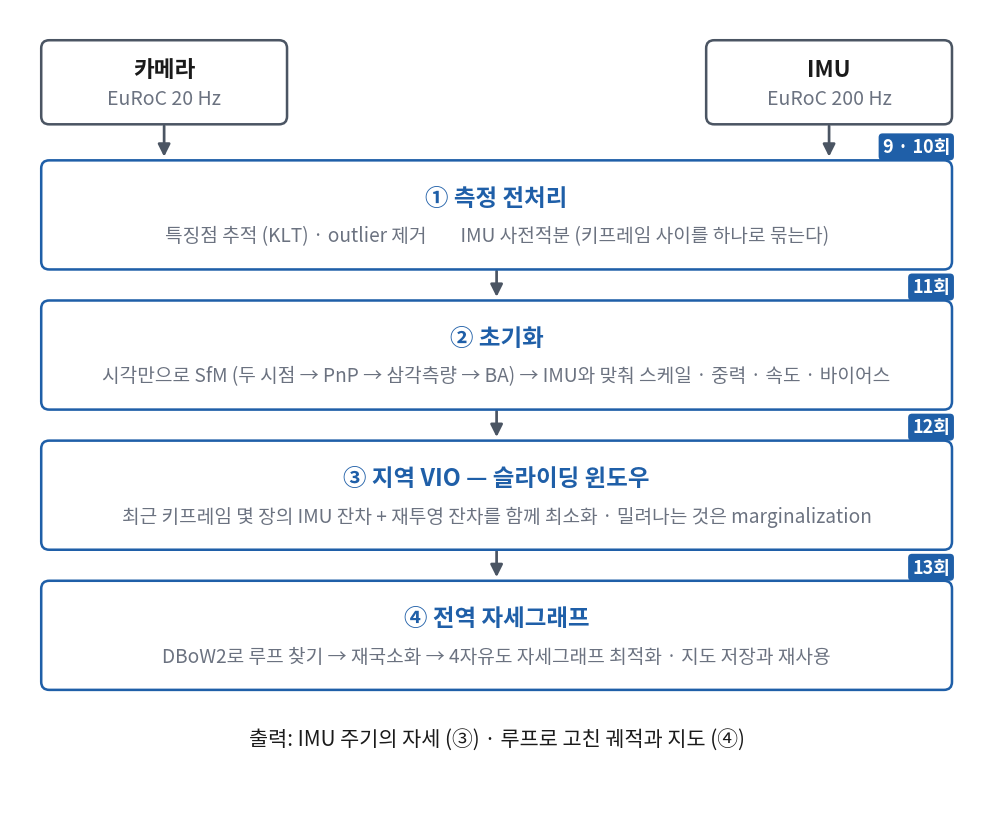
VINS-Mono의 네 단계(논문의 파이프라인 그림을 옮겼다). 오른쪽 위의 파란 표시가 그 단계를 다루는 이 강의의 회차다 — 3부는 이 그림을 위에서 아래로 한 칸씩 내려간다.
단계
VINS-Mono가 한 일
회차
① 측정 전처리
KLT로 점을 따라가고 틀린 짝을 걸러 낸다 · 키프레임 사이 IMU 측정을 사전적분으로 하나로 묶는다
10 · 11
② 초기화
먼저 영상만으로 작은 구조(SfM)를 세우고, 거기에 IMU를 맞춰 스케일 · 중력 방향 · 속도 · 자이로 바이어스를 한 번에 구한다. 표적도 가정도 없이 스케일을 잰다
12
③ 지역 VIO
최근 키프레임 몇 장 안에서 IMU 잔차와 재투영 잔차를 함께 최소화한다(타이트 결합) · 밀려나는 것은 marginalization으로 정보만 남긴다
13
④ 전역 자세그래프
DBoW2로 루프를 찾고 재국소화한 뒤 4자유도 자세그래프로 전체 궤적을 고친다 · 지도를 저장했다가 다음에 불러 쓴다
14
EuRoC V1_01에서 얼마나 맞나
이 시기 시스템들을 같은 잣대로 놓은 표가 있다. ORB-SLAM3 논문(IEEE T-RO 2021) Table II에서, 단안 카메라 + IMU 구성으로
이 강의가 쓰는 시퀀스 V1_01_easy를 돌린 ATE(추정 궤적을 정답에 한 번 겹쳐 맞춘 뒤 위치 차이의 RMS — 1회에 이름이 나왔다)를 옮겼다.
시스템
계열
V1_01 ATE
MSCKF
필터
0.340 m
ROVIO
필터 (반복 EKF, ETH 2015)
0.100 m
OKVIS
최적화
0.090 m
VINS-Mono
최적화
0.047 m
VI-DSO
최적화 (직접법)
0.059 m
ORB-SLAM3
최적화
0.049 m
145초를 날고 5 cm 안팎이다. 다만 이 표의 숫자들은 누가 어떤 설정으로 돌렸는지가 서로 다르다(논문 각주에 MSCKF는 다른 비교 연구의 값, VINS-Mono는 ORB-SLAM3 저자들이 공개 코드를 기본 설정으로 돌린 값이라고 밝혀 두었다).
한 표에 놓였다고 같은 조건이라고 단정하기는 어렵다는 것을 알아 두면, 논문을 읽을 때 덜 헤맨다.
7장 · 2018~2023 — 쌓아 가는 지도 · maplab
여기까지의 시스템은 대체로 한 번 돌고 끝이었다. 프로그램을 끄면 지도도 사라진다.
그런데 같은 건물을 내일 또 돌고, 다른 로봇이 옆 복도를 돈다면? 오늘 만든 지도를 내일 쓰고, 두 로봇의 지도를 합칠 수는 없을까?
취리히 연방공대(ETH Zurich) Autonomous Systems Lab — EuRoC 데이터셋을 만든 연구실
원제는 maplab: An Open Framework for Research in Visual-inertial Mapping and Localization.
온라인 VIO인 ROVIOLI(같은 연구실의 필터 VIO ROVIO에 「지도 안에서 위치 찾기」를 붙인 것)가 주행마다 VI-map을 만든다.
세션(session)
한 번의 주행 기록. 멀티세션 지도는 여러 번의 주행을 한 지도로 합친 것이다.
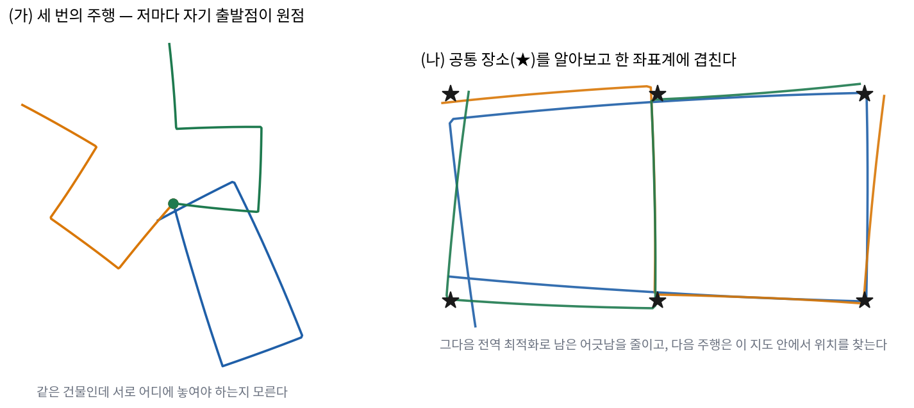
같은 건물을 세 번 달린 주행(합성). (가) 세션마다 자기 출발점이 원점이고 방향도 제각각이라 서로 어디 놓여야 할지 모른다.
(나) 세 주행이 함께 지나간 장소(★)를 알아보고 한 좌표계에 겹친 것이다. 남은 어긋남은 각 주행의 드리프트이고, 그다음 전역 최적화가 이것을 줄인다.
maplab의 생각은 지도를 한 번 쓰고 버리는 것이 아니라 키워 가는 자산으로 본다는 것이다. 흐름은 세 단계다.
온라인 — 주행하면서 VIO가 VI-map(키프레임 · 랜드마크 · IMU 제약)을 만든다. 이미 있는 지도가 있으면 그 안에서 위치를 찾는다.
오프라인 — 주행이 끝나면 콘솔에서 여러 세션을 불러와 세션 사이의 루프를 찾고, 합치고, 전체를 BA로 다듬고, 쓸모없는 것을 솎는다.
재사용 — 다듬은 지도를 다음 주행이 불러 써서, 처음부터 정확한 위치를 얻는다.
maplab 2.0은 여기에 여러 로봇이 동시에 보낸 지도를 서버가 합치는 구조, 카메라 외 센서(라이다 등), 물체 단위의 루프 검출을 더했고,
로봇 여러 대가 23번 달린 약 10 km를 한 지도로 합치는 것을 보였다. 5장의 ORB-SLAM3 Atlas와 함께,
SLAM이 「한 번의 추정」에서 「지도의 수명 관리」로 넓어지는 흐름을 대표한다. 13회에서 VINS-Mono의 지도 저장 · 병합과 나란히 다시 본다.
8장 · 2016~2021 — 학습이 들어온다
2018년쯤 되면 백엔드의 큰 틀은 거의 굳었다. 남은 약점은 다른 데 있었다. 낮에 본 복도를 밤에 지나면 ORB 기술자는 같은 모서리를 같다고 하지 못하는 경우가 많다.
시점이 크게 바뀌어도 마찬가지다. 그런데 이것은 최소제곱으로 풀 문제일까? 「이것이 아까 그 점인가」는 기하가 아니라 인식의 문제이고,
인식은 신경망이 잘하는 일이다.
두 영상의 특징점 집합을 함께 보고 어느 점이 어느 점과 짝인지를 낸다. LightGlue는 SuperGlue를 빠르게 만든 후속이다(취리히 연방공대).
NetVLAD — 신경망 이름 (Arandjelović 외, CVPR 2016)
영상 한 장을 벡터 하나로 요약해 「같은 장소인가」를 고르는 신경망. DBoW2의 학습판에 해당한다.
DROID-SLAM — 시스템 이름 (Teed & Deng, NeurIPS 2021)
프린스턴 대학교. 학습한 광류로 대응을 내고, 그 결과로 자세와 깊이를 맞추는 미분 가능한 번들조정 층을 신경망 안에 넣었다.
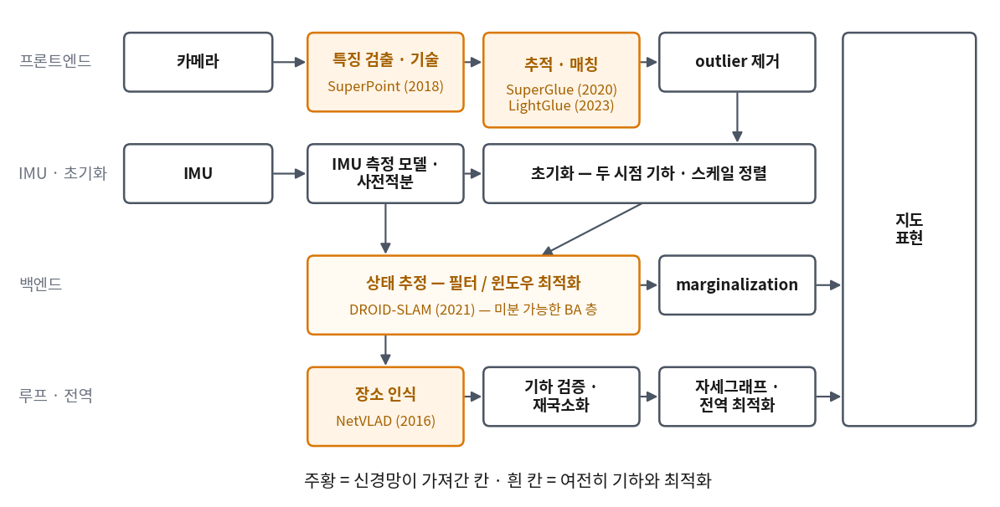
SLAM을 이루는 모듈 블록도(맨 끝 「학습 지도」와 같은 배치)에서 신경망이 가져간 칸만 칠했다. 칠해진 칸은 대부분 「같은 것인가」를 판단하는 프론트엔드다.
해석: 학습 특징을 쓰는 시스템도 대응점을 얻은 뒤에는 여전히 재투영 오차의 제곱합을 푼다. 부품을 갈아 끼운 것이다.
DROID-SLAM은 한 걸음 더 나가 최적화 자체를 신경망 안에 넣었지만, 그 안에 든 것도 결국 번들조정이다. 학습이 기하를 없앤 것이 아니라 기하를 안에 품었다고 보는 편이 정확한 것 같다.
9장 · 2020~2024 — 지도가 그림이 된다 · NeRF · 3DGS
이 강의가 학기 끝에 만드는 지도는 희소한 3차원 점들이다. 위치를 추정하기에는 충분하지만, 그 점들만으로는 장면을 다시 그릴 수 없다.
처음 보는 시점에서 이 방이 어떻게 보일지를 점들은 말해 주지 못한다. 지도를 다시 그릴 수 있는 것으로 만들 수는 없을까?
🆕 이 장의 이름들
NeRF — 방법 이름 (Mildenhall 외, ECCV 2020)
Neural Radiance Fields. UC 버클리 · 구글 리서치 · UC 샌디에이고 연구진. 장면을 「3차원 위치와 보는 방향을 넣으면 그 자리의 밀도와 색을 내는 신경망」 하나로 둔다.
픽셀의 색은 그 픽셀의 광선(4회의 역투영 광선)을 따라 밀도와 색을 쌓아서 얻는다(볼륨 렌더링).
3D Gaussian Splatting (3DGS) — 방법 이름 (Kerbl · Kopanas · Leimkühler · Drettakis, SIGGRAPH 2023)
프랑스 Inria · 독일 막스플랑크 정보학연구소. 장면을 신경망 대신 3차원 가우시안(타원체 모양의 흐릿한 얼룩) 수백만 개로 둔다.
가우시안마다 위치 · 세 축의 크기 · 회전 · 불투명도 · 색을 담고, 화면에 얼룩처럼 찍어(splatting) 그린다. 1080p에서 30 fps 이상으로 그려진다.
같은 장면을 세 가지로 담았다. (가) 점 지도는 「어디에 모서리가 있나」만 안다 — 그림을 다시 그릴 수 없다.
(나) 볼륨 격자(KinectFusion · NeRF의 계열)는 공간을 칸으로 나눠 채운다. (다) 가우시안 46개로도 장면이 다시 그려진다 —
실제 3DGS는 이것을 3차원에서 수백만 개로 한다. (2차원 · 적은 개수로 줄여 계산했다)
무엇이 바뀌었을까? 잔차의 정의가 바뀌었다. 점 지도에서는 「점이 영상의 어디에 찍혔나」(재투영 오차, 4회)를 맞췄다.
NeRF · 3DGS에서는 「지도로 그린 영상이 실제 영상과 얼마나 같나」를 맞춘다. 그런데 이것은 5장 곁가지의 직접법과 같은 모양이다 —
계보로 이어진 것은 아니지만, 잔차로 보면 「다시 그릴 수 있는 지도를 가진 직접법」에 가깝다.
그리고 바뀌지 않은 것도 많다. 지금 나와 있는 3DGS-SLAM은 상당수가 루프 클로징과 전역 일관성을 자세그래프 같은 고전 백엔드에 맡기고,
단안일 때의 스케일은 IMU나 다른 센서에서 얻는다. 지도의 표현이 바뀐 것이지 추정 문제가 바뀐 것은 아니다.
이 강의는 3DGS를 만들지 않는다. 최종 프로젝트가 끝까지 돈 뒤에 관심이 생기면 위 논문들부터 읽어 보기를 권합니다.
10장 · 2024~ — 한 번에 보는 신경망 · DUSt3R · MASt3R · VGGT
1부에서 영상 두 장으로 3차원 점을 얻으려면 단계를 차례로 밟아야 했다 — 특징을 뽑고, 짝을 짓고, 틀린 짝을 버리고, 에피폴라 기하로 자세를 구하고, 삼각측량을 한다.
이 단계를 신경망 하나가 한 번에 할 수는 없을까?
🆕 이 장의 이름들
pointmap
영상의 픽셀마다 3차원 점 하나를 붙인 것. 영상과 같은 크기의 「XYZ 영상」이다. 이것만 있으면 깊이 · 대응 · 카메라 자세를 모두 거꾸로 계산할 수 있다.
Naver Labs Europe 연구진. 영상 두 장을 넣으면 두 장의 pointmap을 같은 좌표계로 바로 낸다. 카메라 내부 파라미터도 몰라도 된다. MASt3R는 여기에 정밀한 대응(매칭)을 더했다.
MASt3R-SLAM — 시스템 이름 (Murai · Dexheimer · Davison, CVPR 2025)
Imperial College London. MASt3R의 두 장짜리 결과를 이어 붙여 실시간(약 15 fps) 단안 밀집 SLAM을 만들었다. 루프 클로징과 2차 전역 최적화는 따로 붙였다.
VGGT — 신경망 이름 (Wang · Chen · Karaev · Vedaldi · Rupprecht · Novotny, CVPR 2025 최우수 논문)
Visual Geometry Grounded Transformer. 옥스퍼드 대학교 VGG와 Meta AI. 영상 여러 장을 한 번에 넣으면 카메라 자세 · 깊이 · 대응을 몇 초 안에 낸다.
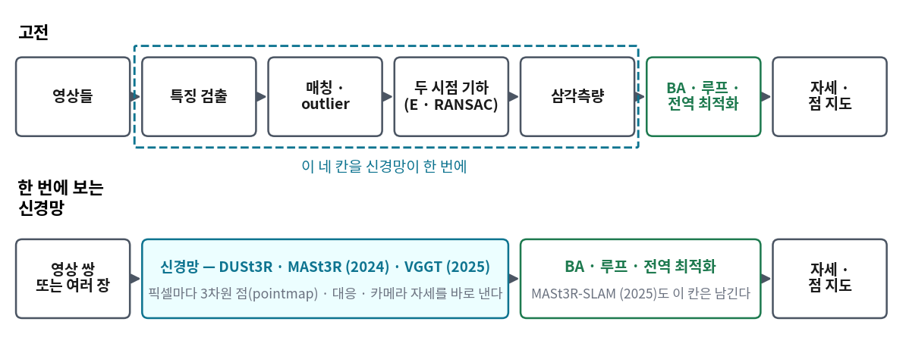
위 줄의 네 칸(1부 4 · 5회에서 손으로 한 것)을 신경망 하나가 한 번에 낸다. 그러나 초록 칸 — 긴 궤적을 일관되게 묶는 최적화와 루프는 아래 줄에도 그대로 남아 있다.
그럼 기하는 학습이 다 가져가게 될까? 지금까지 나온 것을 보면 아직은 그렇게 보기 어려운 것 같다.
이 계열은 좋은 초기값을 만드는 데 매우 강하다 — 11회 초기화에서 초기값이 SLAM에 얼마나 중요한지 실감하게 된다.
반면 수천 프레임에 걸친 전역 일관성, 루프를 닫았을 때 과거를 고치는 일, IMU와 함께 미터 단위로 맞추는 일은 여전히 최적화가 맡는 경우가 많다.
MASt3R-SLAM이 루프와 전역 최적화를 따로 붙인 것이 그 증거다. 신경망이 앞 단계를 삼킬수록, 뒤에 남는 최적화의 몫은 오히려 또렷해지고 있다.
에필로그 — 세 축과 바뀌지 않은 한 줄
열 장을 지나왔다. 이것을 세 질문으로 다시 묶으면 어떻게 될까? 어떤 SLAM 시스템이든 아래 세 질문에 각자의 답을 갖고 있다.
질문
40년 동안의 답
무엇을 상태에 남기나
모든 것을 한 공분산에(1장) → 키프레임만(3 · 4장) → 최근 몇 장 + 지운 것의 정보(6장) → 지역 + 전역 그래프 · 여러 세션(5 · 7장)
대응을 어떻게 찾나
손으로 설계한 모서리 · 기술자(2 · 5장) → 밝기 그 자체(5장 곁가지) → 학습한 특징 · 매칭(8장) → 대응과 기하를 신경망이 한 번에(10장)
지도를 무엇으로 그리나
희소한 점(1~6장) → 밀집 표면(5장 곁가지) → 신경 필드 → 3D 가우시안(9장)
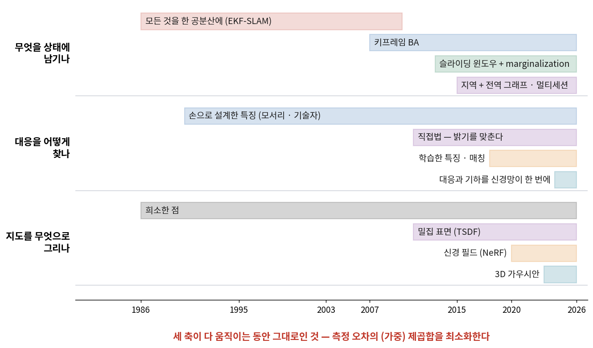
막대는 그 생각이 나와서 지금까지 쓰이는 기간이다. EKF-SLAM 하나만 끝났고 나머지는 밀려나지 않고 쌓였다 — 새 답이 옛 답을 지운 것이 아니라 선택지가 늘었다.
그리고 세 축이 다 움직이는 동안 한 번도 바뀌지 않은 것이 있다. 필터든 BA든 직접법이든 3DGS든, 모두 결국 이 한 줄을 푼다.
\(\mathcal{X}\)는 추정할 것 전부(자세 · 지도), \(\mathbf{e}_i\)는 측정 \(i\)가 「지금 추정과 얼마나 어긋나나」, \(\Sigma_i\)는 그 측정을 얼마나 믿나다.
측정마다 어긋남을 믿는 만큼 무게를 달아 제곱해 더하고, 그 합이 가장 작은 추정을 고른다.
바뀐 것은 \(\mathcal{X}\)에 무엇을 넣느냐(상태 축), \(\mathbf{e}_i\)를 무엇으로 재느냐(대응 · 표현 축), 그리고 이 합을 한 번에 푸느냐 조금씩 푸느냐(필터 · 최적화)뿐이다.
이 식이 어디서 나오는지(확률에서), 어떻게 푸는지(필터 · 최적화)가 7회와 8회의 전부다.
이 뼈대를 손으로 세워 본 사람은 새 논문에서 무엇이 새로운지 — 세 축 중 어느 것을 바꿨는지 — 를 바로 알아보게 된다.
계보도 — 무엇이 무엇에서 나왔나
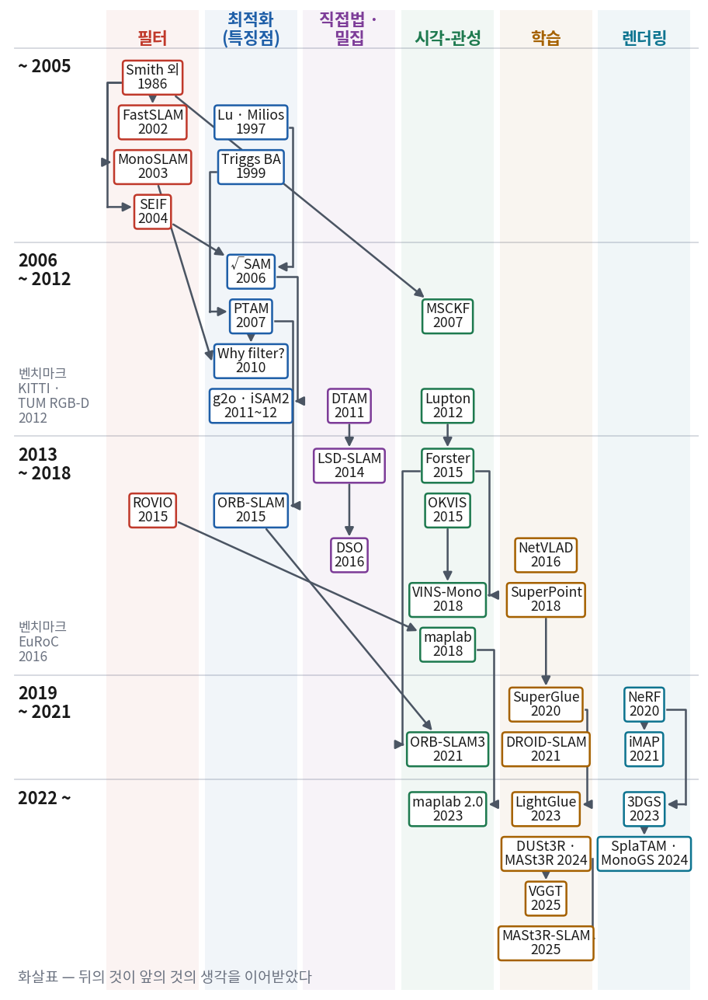
오늘 나온 이름을 한 장에 놓았다. 화살표는 「뒤의 것이 앞의 것의 생각을 이어받았다」는 뜻이다. 왼쪽 아래에 벤치마크 데이터셋(KITTI · TUM RGB-D 2012, EuRoC 2016)이 나온 시기를 적었다.
🗺️ SLAM 학습 지도 — 무엇이 있어야 돌아가고, 무엇을 언제 배우나
이제 방향을 바꿔 보자. 오늘 본 시스템 중 하나 — 이를테면 VINS-Mono — 를 실제로 돌리려면 어떤 알고리즘들이 몇 개 있어야 할까?
8장에서 쓴 모듈 블록도를 다시 꺼내, 이번에는 칸마다 그것을 배우는 회차를 붙였다.
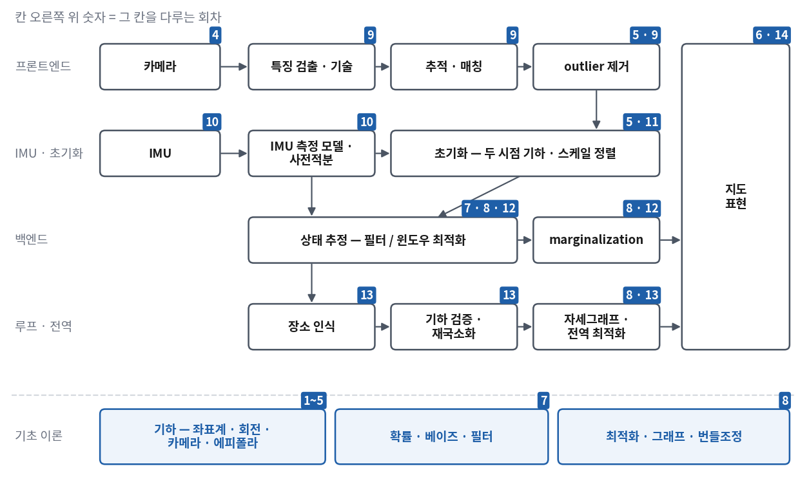
칸 오른쪽 위의 숫자가 그 칸을 다루는 회차다. 화살표는 데이터가 흐르는 방향이다. 맨 아래 세 칸이 위의 모든 칸이 서 있는 바닥이다.
위 그림의 칸을 「무엇을 푸는 알고리즘이 필요한가」로 풀어 적으면 이렇다.
모듈
풀어야 하는 것
대표 알고리즘
회차
카메라 모델
3차원 점이 영상의 어디에 찍히나 · 왜곡
핀홀 · radial-tangential
4
특징 · 추적 · outlier
영상 사이에서 같은 점을 찾고, 틀린 짝을 버린다
Shi-Tomasi · KLT · ORB · RANSAC
5 · 9
IMU 모델 · 사전적분
IMU가 무엇을 재나 · 키프레임 사이를 하나의 상대 측정으로
측정 모델 · 잡음 이산화 · \(\Delta R,\Delta\mathbf{v},\Delta\mathbf{p}\)
해석: 맨 오른쪽 열에 7과 8이 가장 자주 나온다. 상태 추정 · marginalization · 전역 최적화가 모두 이 두 회차의 식 위에 서 있기 때문이다.
그래서 이 강의는 VINS-Mono를 뜯기(3부) 전에 두 회차를 들여 필터와 최적화를 처음부터 유도한다.
3부에서 새 식이 나오면 「7회의 이 식에서 이것을 바꾼 것」, 「8회의 이 잔차를 이것으로 바꾼 것」으로 읽게 된다.
7~14회 로드맵
회
제목
무엇을 배우나
오늘 이야기의 어디
7
확률적 상태추정 — 베이즈 필터에서 KF · EKF와 그 변형까지
확률의 네 규칙 · 베이즈 필터 유도 · 가우시안 · KF 유도 · EKF · IEKF · ESKF · UKF · 정보필터 · 파티클 필터 · EKF-SLAM과 일관성
VINS-Mono pose_graph · 다른 방향: ORB-SLAM3 Atlas · maplab 멀티세션 · 학습 장소 인식
5 · 7장
14
다른 방향과 최신 SLAM
필터 계열 VIO(MSCKF · OpenVINS) · 직접법(DSO) · 학습 기반(DROID-SLAM) · 신경 · 가우시안 지도(NICE-SLAM · SplaTAM · MonoGS) · feed-forward(MASt3R-SLAM · VGGT) — 고전 모듈의 어느 칸을 무엇이 대신하나 · 실제 로봇에서 달라지는 것
곁가지 · 8 · 9 · 10장
오늘은 그림으로 보았다. 다음 회차부터는 같은 것을 식으로 봅니다. 7회는 프롤로그의 타원들이 어떤 식으로 커지고 줄어드는지,
1장의 실이 공분산의 어느 칸인지를 베이즈 정리 한 줄에서부터 세웁니다. 그 식들이 손에 익으면 오늘 본 열 장이 전부 같은 뼈대의 변주로 보이기 시작할 것입니다.
✅ 오늘의 점검
조금 더 알아두면 참고
📚 읽을거리 — Cadena 외 (2016), 1 · 2절
Cesar Cadena 외 여러 연구진이 쓴 Past, Present, and Future of Simultaneous Localization and Mapping: Toward the Robust-Perception Age
(IEEE Transactions on Robotics, 2016)는 분야가 스스로를 정리한 논문이다. 1 · 2절만 읽어도 오늘의 1~6장이 다른 사람의 언어로 한 번 더 지나간다.
흥미로운 것은 이 논문이 「남은 문제」로 꼽은 목록이다 — 강건성, 규모, 표현(representation), 학습과의 결합.
그 뒤 10년의 흐름(7~10장)이 대체로 이 목차를 따라 움직였다. 읽으면서 가장 놀란 문장 하나를 골라 두면 좋습니다.
연구실의 계보 — 같은 이름이 계속 나오는 이유
오늘 나온 이름을 연구실로 묶어 보면 계보도의 화살표가 사람을 따라 흐른 것이 보인다.
Davison 쪽 (옥스퍼드 → Imperial College London) — MonoSLAM(2003) → 「Why filter?」(2010) → DTAM · KinectFusion(2011, Newcombe) →
iMAP(2021) → MonoGS(2024) → MASt3R-SLAM(2025). 필터를 만든 연구실이 필터를 넘어서는 논문을 내고, 밀집 재구성과 신경 표현, 학습 사전지식으로 옮겨 갔다.
사라고사 대학교 — Montiel이 「Why filter?」의 공저자였고, 같은 곳에서 ORB-SLAM(2015) → Atlas(2019) → ORB-SLAM3(2021)이 나왔다.
뮌헨 공대 Cremers 쪽 — LSD-SLAM(2014) → DSO(2016) → VI-DSO(2018).
취리히 — 연방공대 ASL이 EuRoC 데이터셋과 OKVIS · ROVIO · maplab을, 취리히 대학교 쪽 연구진이 사전적분 정리(Forster 외)를,
연방공대 쪽에서 SuperGlue · LightGlue가 나왔다.
「Why filter?」의 그래프는 어떻게 생겼나
논문의 핵심 그림은 가로축이 정확도(가장 나쁜 설정 대비 엔트로피 감소, 비트), 세로축이 계산 시간이고, BA와 필터 두 곡선이 그려져 있다.
낮은 정확도 쪽에서는 두 곡선이 비슷하다가, 일정 정확도를 넘으면 BA가 같은 정확도를 더 싸게 낸다.
논문은 또 하나 재미있는 관찰을 남겼다 — 계산만 보면 필터는 키프레임을 하나만 쓰는 것이 가장 효율적으로 나오는데,
실제로는 선형화 오차 때문에 좋은 생각이 아니라고 적었다. 단순한 모형이 내놓은 결론을 모형이 빠뜨린 것으로 다시 걸러 읽는 좋은 예다.
벤치마크 데이터셋 — 비교가 가능해진 순간
이 분야의 숨은 주인공은 데이터셋이다. 같은 데이터 · 같은 잣대로 비교할 수 있게 되자 어디가 약한지가 숫자로 보이기 시작했다.
2012년 KITTI(자동차 규모)와 TUM RGB-D(실내, ATE · RPE를 비교의 표준 말로 만들었다), 2016년 EuRoC(시각-관성의 표준, 정답에 속도 · 바이어스까지 들어 있다 —
이 강의가 쓰는 데이터)가 차례로 나왔고, 그 뒤 어안 카메라 + 관성의 TUM-VI(2018), 학습용 대규모 합성 데이터 TartanAir(2020)가 이어졌다.
maplab 2.0이 성능을 보인 HILTI 벤치마크(2021~)처럼 건설 현장 · 다중 센서로 넓어지는 흐름도 있다.